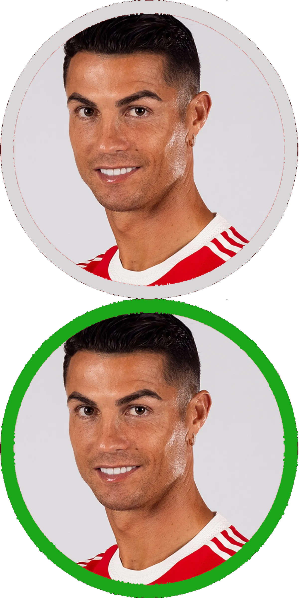
Cristiano Ronaldo
Frequentemente considerado como um dos melhores e mais completos jogadores de todos os tempos, foi eleito o melhor jogador do mundo pela FIFA e pela France Football recebendo o prêmio Ballon d'Or (que por um período passou a denominar-se Bola de Ouro da FIFA) um total de cinco vezes: 2008, 2013, 2014, 2016 e 2017.


 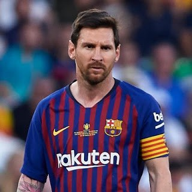
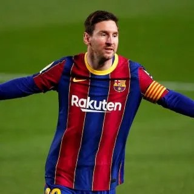
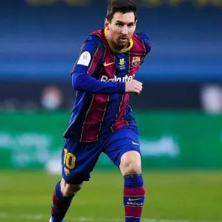
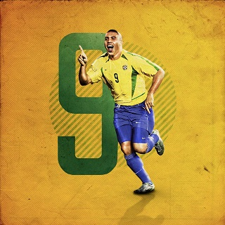
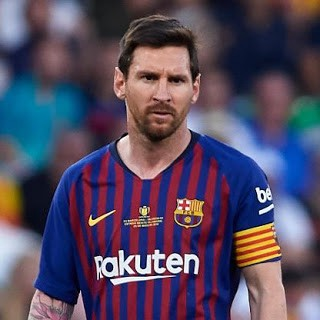
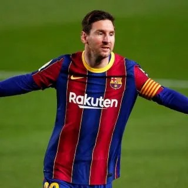
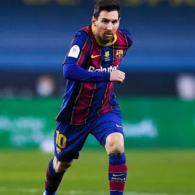
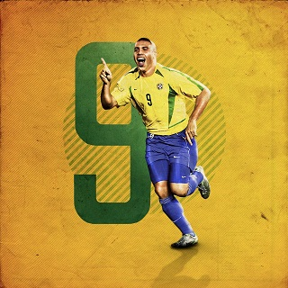

 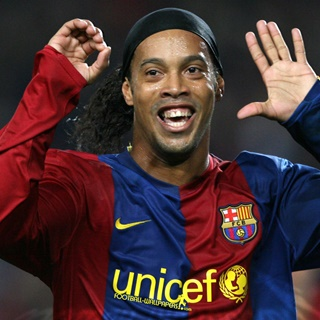
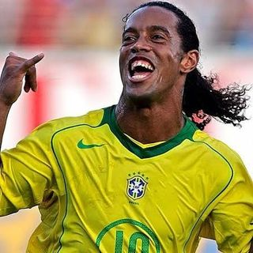
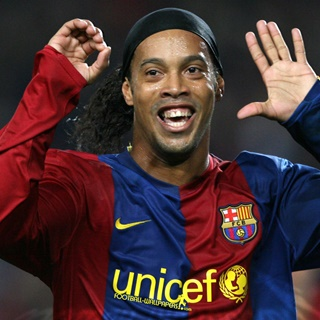
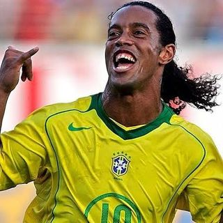

“Sem disciplina, o talento não serve para nada.”
"Você pode superar qualquer coisa, se e somente se, você ama algo o suficiente."
“A cada gol que marco, parece que emagreço um quilo. Tomara que continue assim e eu acabe sumindo de tão magrinho.”
"Cheguei ao Barcelona com a intenção de marcar uma era."